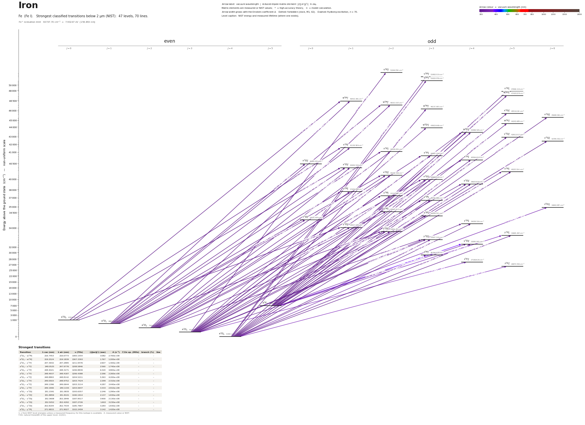

Iron energy level diagram
Energy levels and transitions of neutral iron (Fe I): the 70 strongest classified lines below 2 µm from the NIST Atomic Spectra Database and the 47 levels they connect, each line with its vacuum wavelength, frequency and, for 70 of them, the reduced dipole matrix element derived from the NIST transition rate. Lifetimes, hyperfine constants and isotope shifts from the literature have not been compiled for this element yet.
Hover a line or a level to isolate it, click to keep it selected. Scroll to zoom, drag to move.

Download: diagram (PDF) diagram (SVG) transitions (CSV) levels (CSV) source code

Strongest transitions of iron
| Transition | λ vac (nm) | λ air (nm) | ν (THz) | |⟨J‖er‖J′⟩| (ea₀) | A (s⁻¹) | Γ/2π up. (MHz) | branch (%) | Use |
|---|---|---|---|---|---|---|---|---|
| a 5D4 – w 5P°3 | 216.7453 | 216.6773 | 1383.1554 | 3.082 | 2.700e+08 | – | – | |
| a 5D2 – w 5P°2 | 219.2524 | 219.1839 | 1367.3393 | 1.767 | 1.200e+08 | – | – | |
| a 5D3 – x 5F°3 | 247.3642 | 247.2895 | 1211.9476 | 2.607 | 1.300e+08 | – | – | |
| a 5D2 – x 5F°2 | 248.0525 | 247.9776 | 1208.5846 | 2.560 | 1.740e+08 | – | – | |
| a 5D4 – x 5F°5 | 248.4021 | 248.3271 | 1206.8839 | 6.320 | 4.800e+08 | – | – | |
| a 5D1 – x 5F°1 | 248.4937 | 248.4187 | 1206.4388 | 2.266 | 2.260e+08 | – | – | |
| a 5D3 – x 5F°4 | 248.8893 | 248.8142 | 1204.5211 | 5.363 | 4.200e+08 | – | – | |
| a 5D0 – x 5F°1 | 249.0503 | 248.9752 | 1203.7424 | 2.299 | 2.310e+08 | – | – | |
| a 5D2 – x 5F°3 | 249.1396 | 249.0644 | 1203.3114 | 4.287 | 3.440e+08 | – | – | |
| a 5D1 – x 5F°2 | 249.1906 | 249.1155 | 1203.0647 | 3.333 | 2.910e+08 | – | – | |
| a 5D3 – x 5D°2 | 251.1591 | 251.0835 | 1193.6357 | 2.246 | 1.290e+08 | – | – | |
| a 5D2 – x 5D°1 | 251.8859 | 251.8101 | 1190.1914 | 2.137 | 1.930e+08 | – | – | |
| a 5D4 – x 5D°4 | 252.3608 | 252.2849 | 1187.9517 | 3.900 | 2.130e+08 | – | – | |
| a 5D1 – x 5D°0 | 252.5052 | 252.4292 | 1187.2726 | 1.602 | 3.230e+08 | – | – | |
| a 5D3 – x 5D°3 | 252.8194 | 252.7434 | 1185.7967 | 3.283 | 1.930e+08 | – | – | |
| a 5D4 – y 5P°3 | 271.9833 | 271.9027 | 1102.2459 | 3.142 | 1.420e+08 | – | – |
λ, ν from NIST level energies unless a measured frequency for this isotope is available. A: measured value or NIST. Γ/2π: natural linewidth of the upper level, 1/(2πτ).
Listed Fe transitions below 2 µm
| Lower level | Upper level | λ vacuum (nm) | λ air (nm) | ν (THz) | Type | |⟨J‖er‖J′⟩| (ea₀) | A (s⁻¹) | Branching (%) | Source of matrix element / A |
|---|---|---|---|---|---|---|---|---|---|
| a 5D4 | u 5P°3 | 193.4535 | – | 1549.6875 | E1 | 0.791 NIST | 2.500e+07 NIST | – | NIST ASD (accuracy C+) |
| a 5D4 | u 5F°3 | 193.7268 | – | 1547.5010 | E1 | 0.743 NIST | 2.200e+07 NIST | – | NIST ASD (accuracy C+) |
| a 5D3 | u 5P°2 | 194.0660 | – | 1544.7961 | E1 | 0.685 NIST | 2.600e+07 NIST | – | NIST ASD (accuracy D+) |
| a 5D4 | w 5P°3 | 216.7453 | 216.6773 | 1383.1554 | E1 | 3.082 NIST | 2.700e+08 NIST | – | NIST ASD (accuracy D+) |
| a 5D2 | w 5P°2 | 219.2524 | 219.1839 | 1367.3393 | E1 | 1.767 NIST | 1.200e+08 NIST | – | NIST ASD (accuracy C+) |
| a 5D1 | w 5P°1 | 219.6728 | 219.6042 | 1364.7227 | E1 | 1.372 NIST | 1.200e+08 NIST | – | NIST ASD (accuracy C+) |
| a 5D0 | w 5P°1 | 220.1077 | 220.0390 | 1362.0263 | E1 | 1.185 NIST | 8.900e+07 NIST | – | NIST ASD (accuracy C) |
| a 5D1 | w 5P°2 | 220.1411 | 220.0724 | 1361.8194 | E1 | 0.859 NIST | 2.800e+07 NIST | – | NIST ASD (accuracy C) |
| a 5D3 | w 5D°3 | 229.8495 | 229.7787 | 1304.2991 | E1 | 0.777 NIST | 1.440e+07 NIST | – | NIST ASD (accuracy D+) |
| a 5D4 | w 5D°4 | 229.8877 | 229.8169 | 1304.0823 | E1 | 1.291 NIST | 3.090e+07 NIST | – | NIST ASD (accuracy D+) |
| a 5D3 | w 5D°4 | 232.1070 | 232.0357 | 1291.6130 | E1 | 0.885 NIST | 1.410e+07 NIST | – | NIST ASD (accuracy C) |
| a 5F5 | v 5F°5 | 245.8341 | 245.7597 | 1219.4911 | E1 | 1.970 NIST | 4.810e+07 NIST | – | NIST ASD (accuracy B) |
| a 5D4 | x 5F°4 | 246.3392 | 246.2647 | 1216.9905 | E1 | 1.971 NIST | 5.850e+07 NIST | – | NIST ASD (accuracy C+) |
| a 5F5 | w 5G°5 | 246.9626 | 246.8880 | 1213.9184 | E1 | 1.401 NIST | 2.400e+07 NIST | – | NIST ASD (accuracy B+) |
| a 5D3 | x 5F°3 | 247.3642 | 247.2895 | 1211.9476 | E1 | 2.607 NIST | 1.300e+08 NIST | – | NIST ASD (accuracy B) |
| a 5D2 | x 5F°2 | 248.0525 | 247.9776 | 1208.5846 | E1 | 2.560 NIST | 1.740e+08 NIST | – | NIST ASD (accuracy B) |
| a 5D4 | x 5F°5 | 248.4021 | 248.3271 | 1206.8839 | E1 | 6.320 NIST | 4.800e+08 NIST | – | NIST ASD (accuracy B) |
| a 5D1 | x 5F°1 | 248.4937 | 248.4187 | 1206.4388 | E1 | 2.266 NIST | 2.260e+08 NIST | – | NIST ASD (accuracy C+) |
| a 5D3 | x 5F°4 | 248.8893 | 248.8142 | 1204.5211 | E1 | 5.363 NIST | 4.200e+08 NIST | – | NIST ASD (accuracy B) |
| a 5D0 | x 5F°1 | 249.0503 | 248.9752 | 1203.7424 | E1 | 2.299 NIST | 2.310e+08 NIST | – | NIST ASD (accuracy C+) |
| a 5D2 | x 5F°3 | 249.1396 | 249.0644 | 1203.3114 | E1 | 4.287 NIST | 3.440e+08 NIST | – | NIST ASD (accuracy B) |
| a 5D1 | x 5F°2 | 249.1906 | 249.1155 | 1203.0647 | E1 | 3.333 NIST | 2.910e+08 NIST | – | NIST ASD (accuracy B) |
| a 5D4 | x 5D°3 | 250.1886 | 250.1132 | 1198.2660 | E1 | 1.911 NIST | 6.750e+07 NIST | – | NIST ASD (accuracy C+) |
| a 5D3 | x 5D°2 | 251.1591 | 251.0835 | 1193.6357 | E1 | 2.246 NIST | 1.290e+08 NIST | – | NIST ASD (accuracy B) |
| a 5D2 | x 5D°1 | 251.8859 | 251.8101 | 1190.1914 | E1 | 2.137 NIST | 1.930e+08 NIST | – | NIST ASD (accuracy B) |
| a 5D4 | x 5D°4 | 252.3608 | 252.2849 | 1187.9517 | E1 | 3.900 NIST | 2.130e+08 NIST | – | NIST ASD (accuracy B) |
| a 5D1 | x 5D°0 | 252.5052 | 252.4292 | 1187.2726 | E1 | 1.602 NIST | 3.230e+08 NIST | – | NIST ASD (accuracy B) |
| a 5D3 | x 5D°3 | 252.8194 | 252.7434 | 1185.7967 | E1 | 3.283 NIST | 1.930e+08 NIST | – | NIST ASD (accuracy B) |
| a 5D2 | x 5D°2 | 252.9895 | 252.9135 | 1184.9995 | E1 | 1.990 NIST | 9.910e+07 NIST | – | NIST ASD (accuracy B) |
| a 5D1 | x 5D°1 | 253.0596 | 252.9835 | 1184.6715 | E1 | 0.959 NIST | 3.830e+07 NIST | – | NIST ASD (accuracy B) |
| a 5D0 | x 5D°1 | 253.6369 | 253.5607 | 1181.9751 | E1 | 1.522 NIST | 9.590e+07 NIST | – | NIST ASD (accuracy B) |
| a 5D1 | x 5D°2 | 254.1735 | 254.0972 | 1179.4796 | E1 | 1.971 NIST | 9.590e+07 NIST | – | NIST ASD (accuracy C+) |
| a 5D2 | x 5D°3 | 254.6743 | 254.5978 | 1177.1605 | E1 | 2.021 NIST | 7.160e+07 NIST | – | NIST ASD (accuracy C+) |
| a 5D3 | x 5D°4 | 255.0378 | 254.9613 | 1175.4824 | E1 | 1.305 NIST | 2.310e+07 NIST | – | NIST ASD (accuracy B) |
| a 5F5 | x 5G°5 | 257.7462 | 257.6690 | 1163.1306 | E1 | 1.025 NIST | 1.130e+07 NIST | – | NIST ASD (accuracy B+) |
| a 5F5 | x 5G°6 | 258.5309 | 258.4536 | 1159.6000 | E1 | 1.869 NIST | 3.150e+07 NIST | – | NIST ASD (accuracy B+) |
| a 5F5 | w 5F°5 | 267.9857 | 267.9061 | 1118.6881 | E1 | 1.252 NIST | 1.500e+07 NIST | – | NIST ASD (accuracy B+) |
| a 5D4 | y 5P°3 | 271.9833 | 271.9027 | 1102.2459 | E1 | 3.142 NIST | 1.420e+08 NIST | – | NIST ASD (accuracy B+) |
| a 5D3 | y 5P°2 | 272.1708 | 272.0902 | 1101.4865 | E1 | 2.275 NIST | 1.040e+08 NIST | – | NIST ASD (accuracy B) |
| a 5D2 | y 5P°1 | 272.4384 | 272.3577 | 1100.4046 | E1 | 1.305 NIST | 5.690e+07 NIST | – | NIST ASD (accuracy B) |
| a 5F5 | w 5D°4 | 273.4389 | 273.3580 | 1096.3781 | E1 | 2.539 NIST | 7.100e+07 NIST | – | NIST ASD (accuracy C+) |
| a 5D1 | y 5P°1 | 273.8119 | 273.7309 | 1094.8847 | E1 | 1.484 NIST | 7.250e+07 NIST | – | NIST ASD (accuracy B) |
| a 5D2 | y 5P°2 | 274.3216 | 274.2405 | 1092.8502 | E1 | 1.547 NIST | 4.700e+07 NIST | – | NIST ASD (accuracy C+) |
| a 5D3 | y 5P°3 | 275.0953 | 275.0140 | 1089.7766 | E1 | 1.404 NIST | 2.740e+07 NIST | – | NIST ASD (accuracy B) |
| a 5F5 | y 5G°5 | 277.9040 | 277.8220 | 1078.7627 | E1 | 1.029 NIST | 9.080e+06 NIST | – | NIST ASD (accuracy B+) |
| a 5F5 | y 5G°6 | 278.8927 | 278.8105 | 1074.9384 | E1 | 2.870 NIST | 5.920e+07 NIST | – | NIST ASD (accuracy B+) |
| a 5D4 | y 5F°4 | 293.7762 | 293.6903 | 1020.4790 | E1 | 1.256 NIST | 1.400e+07 NIST | – | NIST ASD (accuracy C+) |
| a 5D3 | y 5F°3 | 294.8737 | 294.7876 | 1016.6807 | E1 | 1.273 NIST | 1.830e+07 NIST | – | NIST ASD (accuracy B) |
| a 5D2 | y 5F°2 | 295.4803 | 295.3940 | 1014.5937 | E1 | 1.097 NIST | 1.890e+07 NIST | – | NIST ASD (accuracy A) |
| a 5D4 | y 5F°5 | 296.7764 | 296.6898 | 1010.1626 | E1 | 1.965 NIST | 2.720e+07 NIST | – | NIST ASD (accuracy A) |
| a 5D3 | y 5F°4 | 297.4103 | 297.3235 | 1008.0097 | E1 | 1.462 NIST | 1.830e+07 NIST | – | NIST ASD (accuracy A) |
| a 5D4 | y 5D°3 | 298.4440 | 298.3569 | 1004.5183 | E1 | 1.601 NIST | 2.790e+07 NIST | – | NIST ASD (accuracy A) |
| a 5D3 | y 5D°2 | 299.5300 | 299.4427 | 1000.8763 | E1 | 1.706 NIST | 4.390e+07 NIST | – | NIST ASD (accuracy B+) |
| a 5F5 | x 5F°5 | 300.0386 | 299.9511 | 999.1797 | E1 | 1.579 NIST | 1.700e+07 NIST | – | NIST ASD (accuracy C) |
| a 5D2 | y 5D°1 | 300.1822 | 300.0948 | 998.7015 | E1 | 1.604 NIST | 6.420e+07 NIST | – | NIST ASD (accuracy A) |
| a 5D1 | y 5D°0 | 300.9015 | 300.8138 | 996.3144 | E1 | 1.199 NIST | 1.070e+08 NIST | – | NIST ASD (accuracy A) |
| a 5D2 | y 5D°2 | 302.1370 | 302.0491 | 992.2400 | E1 | 1.149 NIST | 1.940e+07 NIST | – | NIST ASD (accuracy B) |
| a 5D4 | y 5D°4 | 302.1519 | 302.0639 | 992.1914 | E1 | 3.050 NIST | 7.590e+07 NIST | – | NIST ASD (accuracy B) |
| a 5D3 | y 5D°3 | 302.1952 | 302.1072 | 992.0489 | E1 | 2.083 NIST | 4.550e+07 NIST | – | NIST ASD (accuracy A) |
| a 5D0 | y 5D°1 | 302.6723 | 302.5842 | 990.4852 | E1 | 1.195 NIST | 3.480e+07 NIST | – | NIST ASD (accuracy A) |
| a 5D1 | y 5D°2 | 303.8273 | 303.7389 | 986.7201 | E1 | 1.419 NIST | 2.910e+07 NIST | – | NIST ASD (accuracy B) |
| a 5D2 | y 5D°3 | 304.8491 | 304.7604 | 983.4127 | E1 | 1.667 NIST | 2.840e+07 NIST | – | NIST ASD (accuracy A) |
| a 5F5 | x 5D°4 | 305.8334 | 305.7445 | 980.2475 | E1 | 1.994 NIST | 3.130e+07 NIST | – | NIST ASD (accuracy B) |
| a 5D3 | y 5D°4 | 305.9975 | 305.9085 | 979.7220 | E1 | 1.440 NIST | 1.630e+07 NIST | – | NIST ASD (accuracy C+) |
| a 5D4 | z 5P°3 | 344.1592 | 344.0605 | 871.0867 | E1 | 1.552 NIST | 1.710e+07 NIST | – | NIST ASD (accuracy B) |
| a 5F5 | z 5G°6 | 358.2215 | 358.1193 | 836.8913 | E1 | 5.485 NIST | 1.020e+08 NIST | – | NIST ASD (accuracy A) |
| a 5D4 | z 5F°5 | 372.0993 | 371.9934 | 805.6787 | E1 | 2.129 NIST | 1.620e+07 NIST | – | NIST ASD (accuracy A) |
| a 5F5 | y 5F°5 | 373.5926 | 373.4863 | 802.4583 | E1 | 5.050 NIST | 9.010e+07 NIST | – | NIST ASD (accuracy A) |
| a 5D3 | z 5F°4 | 373.8194 | 373.7131 | 801.9714 | E1 | 1.809 NIST | 1.410e+07 NIST | – | NIST ASD (accuracy A) |
| a 5F5 | y 5D°4 | 382.1509 | 382.0425 | 784.4871 | E1 | 4.066 NIST | 6.670e+07 NIST | – | NIST ASD (accuracy A) |
Reduced dipole matrix elements follow the convention A = ω³|d|²/(3πε₀ħc³(2J′+1)), with J′ the upper level. Tags show where a number comes from: measured, NIST compilation, high-accuracy theory, or a model calculation.
Fe energy levels
| Level | Energy (cm⁻¹) | J | Parity | Lifetime | gJ | Hyperfine A (MHz) | Hyperfine B (MHz) | Lifetime source | Hyperfine source |
|---|---|---|---|---|---|---|---|---|---|
| a 5D4 | 0.000 | 4 | even | stable | 1.5002 | – | – | – | – |
| a 5D3 | 415.933 | 3 | even | – | 1.5003 | – | – | – | – |
| a 5D2 | 704.007 | 2 | even | – | 1.5004 | – | – | – | – |
| a 5D1 | 888.132 | 1 | even | – | 1.5002 | – | – | – | – |
| a 5D0 | 978.074 | 0 | even | – | – | – | – | – | – |
| a 5F5 | 6928.268 | 5 | even | – | 1.4002 | – | – | – | – |
| z 5F°5 | 26874.550 | 5 | odd | – | 1.399 | – | – | – | – |
| z 5F°4 | 27166.820 | 4 | odd | – | 1.355 | – | – | – | – |
| z 5P°3 | 29056.324 | 3 | odd | – | 1.657 | – | – | – | – |
| y 5D°4 | 33095.941 | 4 | odd | – | 1.496 | – | – | – | – |
| y 5D°3 | 33507.123 | 3 | odd | – | 1.492 | – | – | – | – |
| y 5F°5 | 33695.397 | 5 | odd | – | 1.417 | – | – | – | – |
| y 5D°2 | 33801.572 | 2 | odd | – | 1.495 | – | – | – | – |
| y 5D°1 | 34017.103 | 1 | odd | – | 1.492 | – | – | – | – |
| y 5F°4 | 34039.516 | 4 | odd | – | 1.344 | – | – | – | – |
| y 5D°0 | 34121.603 | 0 | odd | – | – | – | – | – | – |
| y 5F°3 | 34328.752 | 3 | odd | – | 1.244 | – | – | – | – |
| y 5F°2 | 34547.211 | 2 | odd | – | 0.998 | – | – | – | – |
| z 5G°6 | 34843.957 | 6 | odd | – | 1.332 | – | – | – | – |
| y 5P°3 | 36766.966 | 3 | odd | – | 1.661 | – | – | – | – |
| y 5P°2 | 37157.566 | 2 | odd | – | 1.836 | – | – | – | – |
| y 5P°1 | 37409.555 | 1 | odd | – | 2.502 | – | – | – | – |
| x 5D°4 | 39625.804 | 4 | odd | – | 1.489 | – | – | – | – |
| x 5D°3 | 39969.853 | 3 | odd | – | 1.504 | – | – | – | – |
| x 5D°2 | 40231.336 | 2 | odd | – | 1.501 | – | – | – | – |
| x 5F°5 | 40257.314 | 5 | odd | – | 1.39 | – | – | – | – |
| x 5D°1 | 40404.518 | 1 | odd | – | 1.498 | – | – | – | – |
| x 5D°0 | 40491.284 | 0 | odd | – | – | – | – | – | – |
| x 5F°4 | 40594.432 | 4 | odd | – | 1.328 | – | – | – | – |
| x 5F°3 | 40842.154 | 3 | odd | – | 1.254 | – | – | – | – |
| x 5F°2 | 41018.051 | 2 | odd | – | 0.998 | – | – | – | – |
| x 5F°1 | 41130.599 | 1 | odd | – | 0.006 | – | – | – | – |
| y 5G°6 | 42784.352 | 6 | odd | – | 1.342 | – | – | – | – |
| y 5G°5 | 42911.917 | 5 | odd | – | 1.203 | – | – | – | – |
| w 5D°4 | 43499.505 | 4 | odd | – | 1.492 | – | – | – | – |
| w 5D°3 | 43922.668 | 3 | odd | – | 1.481 | – | – | – | – |
| w 5F°5 | 44243.685 | 5 | odd | – | 1.382 | – | – | – | – |
| x 5G°6 | 45608.361 | 6 | odd | – | 1.336 | – | – | – | – |
| x 5G°5 | 45726.130 | 5 | odd | – | 1.269 | – | – | – | – |
| w 5P°3 | 46137.097 | 3 | odd | – | 1.658 | – | – | – | – |
| w 5P°2 | 46313.537 | 2 | odd | – | 1.822 | – | – | – | – |
| w 5P°1 | 46410.381 | 1 | odd | – | 2.436 | – | – | – | – |
| w 5G°5 | 47420.228 | 5 | odd | – | 1.305 | – | – | – | – |
| v 5F°5 | 47606.114 | 5 | odd | – | 1.317 | – | – | – | – |
| u 5F°3 | 51619.076 | 3 | odd | – | – | – | – | – | – |
| u 5P°3 | 51692.010 | 3 | odd | – | – | – | – | – | – |
| u 5P°2 | 51944.784 | 2 | odd | – | – | – | – | – | – |
Fe⁺ ionisation limit 63737.70 cm⁻¹ = 7.90247 eV (156.893 nm)
Sources
Atoms with measured data
- Lithium-632 levels, 85 lines
- Lithium-732 levels, 85 lines
- Beryllium-915 levels, 24 lines
- Sodium-2336 levels, 106 lines
- Magnesium-2418 levels, 61 lines
- Magnesium-2518 levels, 61 lines
- Potassium-3934 levels, 84 lines
- Potassium-4034 levels, 84 lines
- Potassium-4134 levels, 84 lines
- Calcium-4035 levels, 61 lines
- Calcium-4335 levels, 61 lines
- Rubidium-8536 levels, 94 lines
- Rubidium-8736 levels, 94 lines
- Strontium-8740 levels, 70 lines
- Strontium-8840 levels, 70 lines
- Caesium-13331 levels, 79 lines
- Barium-13744 levels, 89 lines
- Barium-13844 levels, 89 lines
- Dysprosium-16339 levels, 55 lines
- Dysprosium-16439 levels, 55 lines
- Ytterbium-17118 levels, 26 lines
- Ytterbium-17418 levels, 26 lines